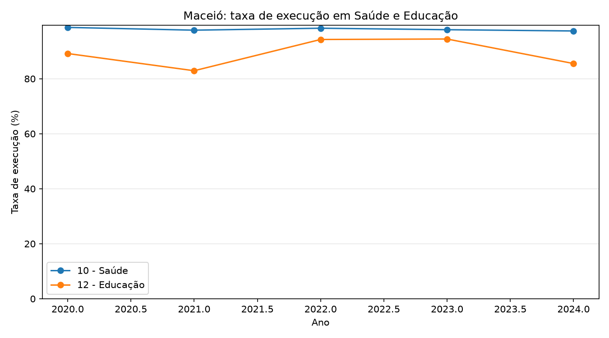
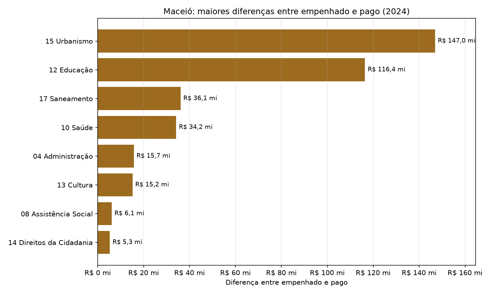
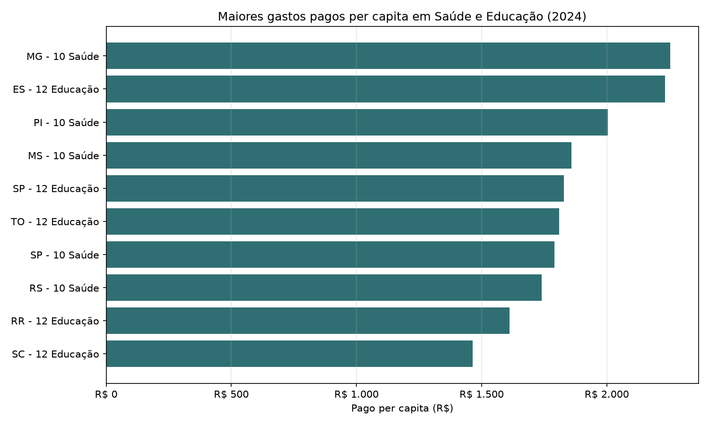
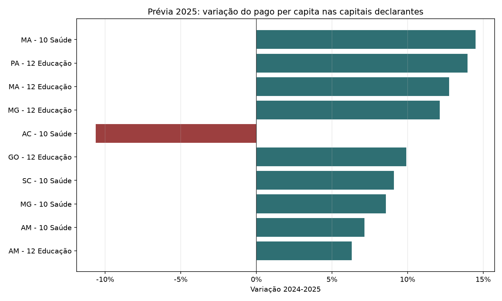

Visão consolidada das despesas das capitais brasileiras por função, com foco
na relação entre despesas empenhadas e pagas.
Este dashboard visual complementa o relatório técnico em Markdown
analise_finbra.md. A versão Markdown foi mantida para auditoria,
diff em Git e rastreabilidade do processo.
Linhas consolidadas50.334
Capitais identificadas26
Funções analisáveis27
Linhas fora dos rankings por função37.521
Método
A leitura respeita o formato brasileiro dos CSVs do Siconfi: encoding
latin-1, separador ;, três linhas iniciais
ignoradas e decimal com vírgula. As análises por função usam apenas linhas
classificadas como funcao, evitando dupla contagem com totais,
subfunções e demais agregações.
Completude por ano
Ano
Capitais
Status
2020
26
completo
2021
26
completo
2022
26
completo
2023
26
completo
2024
26
completo
2025
11
incompleto
Anos completos para comparação histórica: 2020, 2021, 2022, 2023, 2024.
Ano(s) incompleto(s): 2025.
Rankings de Saúde e Educação em 2024
Função
Capital
Pago per capita
Taxa de execução
10 - Saúde
Belo Horizonte - MG
R$ 2.253,18
89,9%
10 - Saúde
Teresina - PI
R$ 2.003,49
96,7%
10 - Saúde
Campo Grande - MS
R$ 1.858,04
88,2%
10 - Saúde
São Paulo - SP
R$ 1.791,32
96,1%
10 - Saúde
Porto Alegre - RS
R$ 1.739,84
87,3%
12 - Educação
Vitória - ES
R$ 2.232,14
91,9%
12 - Educação
São Paulo - SP
R$ 1.827,98
95,8%
12 - Educação
Palmas - TO
R$ 1.809,99
97,9%
12 - Educação
Boa Vista - RR
R$ 1.611,01
97,2%
12 - Educação
Florianópolis - SC
R$ 1.464,21
96,1%
Maiores diferenças entre empenhado e pago em 2024
Capital
Função
Empenhado
Pago
Diferença
Taxa de execução
São Paulo - SP
15 - Urbanismo
R$ 12.071.750.665,81
R$ 10.203.722.086,42
R$ 1.868.028.579,39
84,5%
São Paulo - SP
12 - Educação
R$ 23.290.435.795,57
R$ 22.301.640.088,44
R$ 988.795.707,13
95,8%
São Paulo - SP
10 - Saúde
R$ 22.752.837.820,49
R$ 21.854.464.654,11
R$ 898.373.166,38
96,1%
São Paulo - SP
17 - Saneamento
R$ 2.868.478.794,47
R$ 2.022.166.546,08
R$ 846.312.248,39
70,5%
Curitiba - PR
15 - Urbanismo
R$ 1.805.830.695,76
R$ 982.059.804,58
R$ 823.770.891,18
54,4%
Rio de Janeiro - RJ
12 - Educação
R$ 7.151.238.932,58
R$ 6.475.560.709,52
R$ 675.678.223,06
90,6%
Belo Horizonte - MG
10 - Saúde
R$ 5.993.532.028,34
R$ 5.391.129.586,40
R$ 602.402.441,94
89,9%
Rio de Janeiro - RJ
10 - Saúde
R$ 7.642.644.288,09
R$ 7.093.295.406,04
R$ 549.348.882,05
92,8%
Rio de Janeiro - RJ
09 - Previdência Social
R$ 6.789.834.775,46
R$ 6.260.036.852,91
R$ 529.797.922,55
92,2%
São Paulo - SP
16 - Habitação
R$ 5.281.552.995,13
R$ 4.760.425.320,14
R$ 521.127.674,99
90,1%
Baixa execução financeira em 2024
O recorte considera funções com pelo menos R$ 1.000.000,00
em despesas empenhadas, reduzindo o ruído de valores residuais.
Capital
Função
Empenhado
Pago
Taxa de execução
Goiânia - GO
11 - Trabalho
R$ 1.293.451,03
R$ 0,00
0,0%
São Luís - MA
23 - Comércio e Serviços
R$ 1.867.305,91
R$ 559.164,13
29,9%
Maceió - AL
16 - Habitação
R$ 2.168.153,21
R$ 649.674,84
30,0%
Teresina - PI
17 - Saneamento
R$ 4.825.482,62
R$ 1.586.615,17
32,9%
Teresina - PI
18 - Gestão Ambiental
R$ 3.913.655,20
R$ 1.576.162,65
40,3%
Curitiba - PR
16 - Habitação
R$ 47.450.518,60
R$ 21.807.627,41
46,0%
Vitória - ES
23 - Comércio e Serviços
R$ 15.739.115,51
R$ 7.804.478,54
49,6%
São Luís - MA
20 - Agricultura
R$ 4.555.374,74
R$ 2.291.631,27
50,3%
Vitória - ES
24 - Comunicações
R$ 9.937.871,45
R$ 5.091.425,60
51,2%
Curitiba - PR
15 - Urbanismo
R$ 1.805.830.695,76
R$ 982.059.804,58
54,4%
Restos a pagar sobre empenhado em 2024
Capital
Função
Empenhado
Restos a pagar
Restos sobre empenhado
Taxa de execução
Goiânia - GO
11 - Trabalho
R$ 1.293.451,03
R$ 1.293.451,03
100,0%
0,0%
São Luís - MA
23 - Comércio e Serviços
R$ 1.867.305,91
R$ 1.308.141,78
70,1%
29,9%
Maceió - AL
16 - Habitação
R$ 2.168.153,21
R$ 1.518.478,37
70,0%
30,0%
Teresina - PI
17 - Saneamento
R$ 4.825.482,62
R$ 3.238.867,45
67,1%
32,9%
Teresina - PI
18 - Gestão Ambiental
R$ 3.913.655,20
R$ 2.337.492,55
59,7%
40,3%
Curitiba - PR
16 - Habitação
R$ 47.450.518,60
R$ 25.642.891,19
54,0%
46,0%
Vitória - ES
23 - Comércio e Serviços
R$ 15.739.115,51
R$ 7.934.636,97
50,4%
49,6%
São Luís - MA
20 - Agricultura
R$ 4.555.374,74
R$ 2.263.743,47
49,7%
50,3%
Vitória - ES
24 - Comunicações
R$ 9.937.871,45
R$ 4.846.445,85
48,8%
51,2%
Curitiba - PR
15 - Urbanismo
R$ 1.805.830.695,76
R$ 823.770.891,18
45,6%
54,4%
Maceió contra distribuição das capitais
Ano
Função
Maceió pago pc
Média pago pc
Mediana pago pc
Posição pago pc
Maceió execução
Mediana execução
2020
10 - Saúde
R$ 766,94
R$ 881,20
R$ 789,72
15º de 26
98,7%
93,4%
2020
12 - Educação
R$ 313,16
R$ 617,60
R$ 592,54
24º de 26
89,2%
95,7%
2021
10 - Saúde
R$ 737,29
R$ 939,08
R$ 854,60
18º de 26
97,7%
94,5%
2021
12 - Educação
R$ 375,40
R$ 659,03
R$ 614,40
24º de 26
82,9%
85,3%
2022
10 - Saúde
R$ 832,41
R$ 997,61
R$ 900,50
18º de 26
98,4%
92,9%
2022
12 - Educação
R$ 702,25
R$ 835,78
R$ 793,89
16º de 26
94,3%
90,2%
2023
10 - Saúde
R$ 1.235,46
R$ 1.158,78
R$ 1.068,33
9º de 26
97,8%
93,2%
2023
12 - Educação
R$ 593,80
R$ 957,60
R$ 906,74
24º de 26
94,4%
91,8%
2024
10 - Saúde
R$ 1.314,67
R$ 1.348,42
R$ 1.296,56
13º de 26
97,4%
95,5%
2024
12 - Educação
R$ 715,71
R$ 1.158,05
R$ 1.055,80
25º de 26
85,5%
94,3%
Subfunções de Saúde e Educação em Maceió (2024)
Função
Subfunção
Pago
Pago per capita
Participação na função
Taxa de execução
Saúde
10.302 - Assistência Hospitalar e Ambulatorial
R$ 739.098.739,88
R$ 769,36
58,5%
96,6%
Saúde
10.301 - Atenção Básica
R$ 346.872.424,92
R$ 361,07
27,5%
99,0%
Saúde
10.122 - Administração Geral
R$ 77.189.022,44
R$ 80,35
6,1%
98,8%
Saúde
10.305 - Vigilância Epidemiológica
R$ 68.567.166,70
R$ 71,37
5,4%
98,5%
Saúde
10.303 - Suporte Profilático e Terapêutico
R$ 22.785.057,90
R$ 23,72
1,8%
91,0%
Saúde
10.304 - Vigilância Sanitária
R$ 8.141.131,48
R$ 8,47
0,6%
99,1%
Educação
12.361 - Ensino Fundamental
R$ 291.273.033,05
R$ 303,20
42,7%
97,3%
Educação
12.122 - Administração Geral
R$ 193.550.273,99
R$ 201,47
28,4%
82,2%
Educação
12.368 - Educação Básica
R$ 141.609.400,11
R$ 147,41
20,8%
69,3%
Educação
12.365 - Educação Infantil
R$ 50.237.143,03
R$ 52,29
7,4%
96,6%
Educação
12.367 - Educação Especial
R$ 3.440.711,17
R$ 3,58
0,5%
100,0%
Educação
12.366 - Educação de Jovens e Adultos
R$ 1.239.541,75
R$ 1,29
0,2%
100,0%
Taxas de execução acima de 100%
Casos em que despesas pagas superam empenhadas no mesmo ano devem ser tratados como
alerta interpretativo, pois podem refletir pagamentos de restos de exercícios anteriores
ou outras dinâmicas contábeis.
Ano
Capital
Função
Empenhado
Pago
Taxa de execução
2023
Porto Velho - RO
28 - Encargos Especiais
R$ 131.804.487,40
R$ 147.921.326,16
112,2%
2023
Porto Velho - RO
12 - Educação
R$ 509.360.652,26
R$ 534.101.559,80
104,9%
2023
Porto Velho - RO
10 - Saúde
R$ 543.437.924,51
R$ 562.515.234,52
103,5%
2023
Porto Velho - RO
01 - Legislativa
R$ 53.534.311,19
R$ 54.081.483,38
101,0%
2024
Aracaju - SE
28 - Encargos Especiais
R$ 201.673.513,30
R$ 203.509.021,88
100,9%
2023
Porto Velho - RO
13 - Cultura
R$ 6.763.523,77
R$ 6.784.093,32
100,3%
2023
Porto Velho - RO
04 - Administração
R$ 518.606.400,05
R$ 520.026.750,93
100,3%
2023
Porto Velho - RO
09 - Previdência Social
R$ 187.765.021,82
R$ 188.197.135,78
100,2%
2024
Belém - PA
01 - Legislativa
R$ 132.409.889,76
R$ 132.460.145,70
100,0%
Maceió contra média das capitais
Ano
Função
Maceió execução
Média execução
Maceió pago per capita
Média pago per capita
2020
10 - Saúde
98,7%
92,9%
R$ 766,94
R$ 881,20
2020
12 - Educação
89,2%
93,5%
R$ 313,16
R$ 617,60
2021
10 - Saúde
97,7%
92,7%
R$ 737,29
R$ 939,08
2021
12 - Educação
82,9%
85,5%
R$ 375,40
R$ 659,03
2022
10 - Saúde
98,4%
92,2%
R$ 832,41
R$ 997,61
2022
12 - Educação
94,3%
88,0%
R$ 702,25
R$ 835,78
2023
10 - Saúde
97,8%
93,3%
R$ 1.235,46
R$ 1.158,78
2023
12 - Educação
94,4%
91,3%
R$ 593,80
R$ 957,60
2024
10 - Saúde
97,4%
94,2%
R$ 1.314,67
R$ 1.348,42
2024
12 - Educação
85,5%
92,9%
R$ 715,71
R$ 1.158,05
Prévia de 2025: capitais declarantes
Como 2025 tem apenas parte das capitais declaradas, este recorte não é
comparado com o conjunto completo de capitais. A comparação temporal usa somente
as capitais que aparecem em 2025.
UF
Capital declarante
AC
Rio Branco - AC
AM
Manaus - AM
BA
Salvador - BA
CE
Fortaleza - CE
GO
Goiânia - GO
MA
São Luís - MA
MG
Belo Horizonte - MG
PA
Belém - PA
RJ
Rio de Janeiro - RJ
RO
Porto Velho - RO
SC
Florianópolis - SC
Ranking preliminar de Saúde e Educação em 2025
Função
Capital
Pago per capita
Taxa de execução
10 - Saúde
Belo Horizonte - MG
R$ 2.445,94
88,6%
10 - Saúde
Goiânia - GO
R$ 1.476,87
98,4%
10 - Saúde
São Luís - MA
R$ 1.392,67
92,5%
10 - Saúde
Fortaleza - CE
R$ 1.370,73
98,7%
10 - Saúde
Porto Velho - RO
R$ 1.263,68
94,9%
12 - Educação
Florianópolis - SC
R$ 1.437,60
93,1%
12 - Educação
Belo Horizonte - MG
R$ 1.416,70
91,6%
12 - Educação
Manaus - AM
R$ 1.378,62
98,5%
12 - Educação
Goiânia - GO
R$ 1.334,41
94,6%
12 - Educação
Porto Velho - RO
R$ 1.286,46
97,2%
Painel balanceado: 2024 vs 2025
Capital
Função
Pago pc 2024
Pago pc 2025
Variação pago pc
Execução 2024
Execução 2025
São Luís - MA
10 - Saúde
R$ 1.216,39
R$ 1.392,67
14,5%
89,5%
92,5%
Belém - PA
12 - Educação
R$ 629,19
R$ 717,03
14,0%
95,1%
89,0%
São Luís - MA
12 - Educação
R$ 958,68
R$ 1.080,91
12,7%
78,6%
77,4%
Belo Horizonte - MG
12 - Educação
R$ 1.263,57
R$ 1.416,70
12,1%
90,3%
91,6%
Rio Branco - AC
10 - Saúde
R$ 864,56
R$ 772,66
-10,6%
97,1%
93,4%
Goiânia - GO
12 - Educação
R$ 1.213,97
R$ 1.334,41
9,9%
94,0%
94,6%
Florianópolis - SC
10 - Saúde
R$ 958,08
R$ 1.045,20
9,1%
91,9%
91,7%
Belo Horizonte - MG
10 - Saúde
R$ 2.253,18
R$ 2.445,94
8,6%
89,9%
88,6%
Manaus - AM
10 - Saúde
R$ 797,01
R$ 854,07
7,2%
95,4%
97,0%
Manaus - AM
12 - Educação
R$ 1.296,83
R$ 1.378,62
6,3%
98,4%
98,5%
Gráficos

Maceio taxa execucao saude educacao

Maceio diferencas empenhado pago

Ranking pago per capita saude educacao

Previa 2025 variacao pago per capita
Conclusões principais
A comparação anual deve priorizar 2020 a 2024, pois 2025 tem apenas parte das capitais declaradas.
A prévia de 2025 compara capitais declarantes contra elas mesmas em 2024.
Em 2024, Maceió combina alta execução em Saúde com diferenças mais relevantes entre empenhado e pago em Urbanismo e Educação.
O detalhamento por subfunção mostra concentração em assistência hospitalar, atenção básica, ensino fundamental e administração geral.
Restos a pagar e taxas acima de 100% precisam ser lidos como sinais de dinâmica orçamentária, não apenas como ranking simples.
Os rankings por função excluem agregados para evitar dupla contagem.
A leitura per capita é essencial para comparar capitais de portes diferentes.